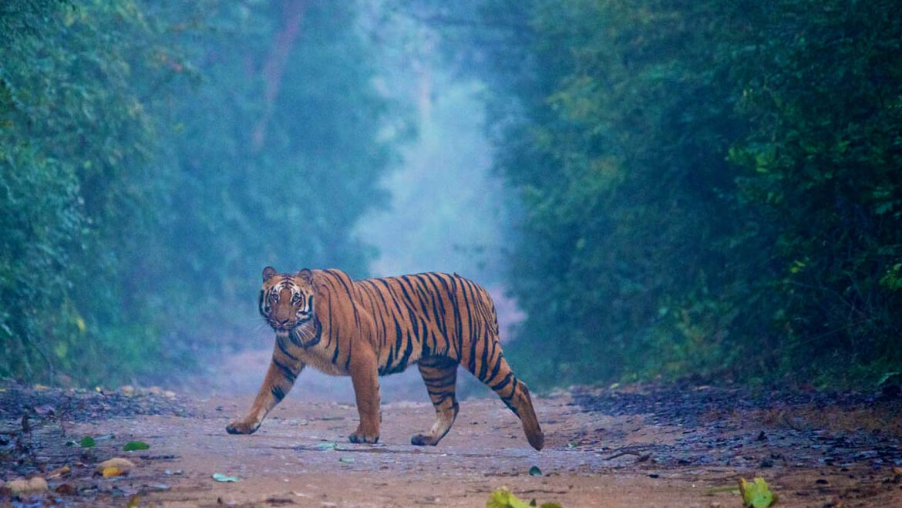
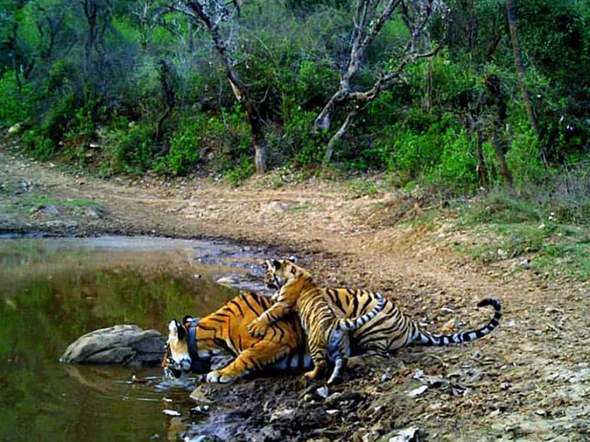

thumb_up
0
thumb_down
0
 The national parks established in 1936, earlier known as Ramganga National Park and then renamed as Jim Corbett in 1956. The enthralling ride to Jim Corbett takes you about 5 hours from Delhi. The area under the Project Tiger conservation is lush evergreen forest area primarily protecting Tigers and a huge variety of wildlife including King cobra, Sambar deer, Chital, wildlife boar. Located in the Nainital district it is one of the most popularly known wildlife sanctuary of North India. The place is often the weekend getaway for the Delhiites who wants to have some adventurous couple of nights in the woods.
 The very famous Sanctuary of Rajasthan, and one of the most famous, the sanctuary is located in the deep areas of the woods and abodes variety of monkeys, nilgais and crocodiles. This place is located at a distance of about 30 km from Alwar which is about a 4 hrs drive from Delhi and taking the rails would be the best option. In the center of the sanctuary lies a palace which is beautiful place to hand out with your loved ones. The palace is surrounded by a lake and is famous for boating. Many movies have been shot here and it remains to be a continuous attraction for the tourists. The place abodes tigers and if you are lucky you will definitely spot few along with giant crocodiles in the lake.
 Amidst the deodar and oak trees and the embraced by the Himalayas, the sanctuary is an absolute beauty.
It is located along the Delhi Kullu Highway and hence becomes one of the most sought after weekend getaway.
Amidst the deodar and oak trees and the embraced by the Himalayas, the sanctuary is an absolute beauty.
It is located along the Delhi Kullu Highway and hence becomes one of the most sought after weekend getaway.
The sanctuary offers few of most exciting activities inside the jungle like of trekking, rock climbing, camping to name a few.
Best time to visit the park is the beginning of the summer and winter.
 A High altitude sanctuary located in the eastern Karakoram in Leh district is a famous place for migratory birds.
The place is famous for the medicinal value of the vegetation here.
The sanctuary is mostly a dry cold desert area and encompasses rarest of the rare species of the animals.
The sanctuary is embraced within the valleys of the Nubra and Shyok Rivers bounded by the international boundaries of China and Pakistan.
It is known for the Ladakhi urial, Tibetan antelope, wild sheeps to name a few.
A High altitude sanctuary located in the eastern Karakoram in Leh district is a famous place for migratory birds.
The place is famous for the medicinal value of the vegetation here.
The sanctuary is mostly a dry cold desert area and encompasses rarest of the rare species of the animals.
The sanctuary is embraced within the valleys of the Nubra and Shyok Rivers bounded by the international boundaries of China and Pakistan.
It is known for the Ladakhi urial, Tibetan antelope, wild sheeps to name a few.